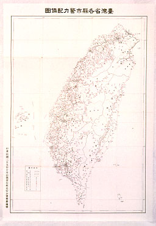
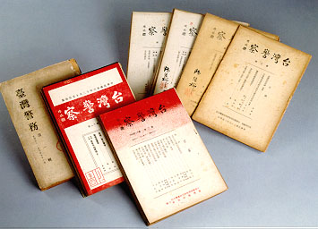

義助慰安婦 —— 李敖百件珍藏義賣藝術品（第83件） 品 名：H13. 台灣警察史史料 32 件附地圖一件 預估價：40 萬 成交價：40 萬 說 明： 早期的一些雜誌如《臺灣警察》、《臺灣警務》共 33 件，可反應出當時政治、社會的情況。另一件為二二八事變前的台灣省各縣市警力配置圖，極為罕見。 
早期的一些雜誌如《臺灣警察》、《臺灣警務》共 33 件，可反應出當時政治、社會的情況。另一件為二二八事變前的台灣省各縣市警力配置圖，極為罕見。